July 31, 2026 · 19 articles
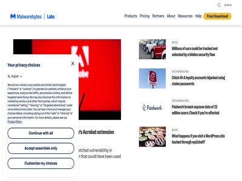
Fake Flash Player installs AtlasRAT
July 31, 2026
Researchers have uncovered a new campaign that spreads the AtlasRAT remote access Trojan by disguising it as a Flash Player installer. (Malwarebytes Labs)

Google AI Uncovers 13-Year-Old Chrome Flaw Amid Record Patching Pace
July 31, 2026
The internet giant has built an agent harness to find vulnerabilities across Chrome’s codebase. The post Google AI Uncovers 13-Year-Old Chrome Flaw Amid Record Patching Pace app... (SecurityWeek)

The Xcode Assassin Returns: A Deep Dive Into the Latest XCSSET Version
July 31, 2026
Analysis of XCSSET v40 reveals a macOS malware targeting developers via Xcode. Unit 42 used advanced pattern matching and AI to decode its logic. The post The Xcode Assassin Ret... (Palo Alto Networks Unit 42)
What the Hugging Face breach reveals about defense in the age of agentic AI
July 31, 2026
We almost never get both sides of an intrusion. This time we did. Last month, Hugging Face disclosed a breach into part of its production infrastructure, saying an autonomous AI... (CyberScoop)

AWS Blames North Korean Group for Axios and Other npm Supply Chain Attacks
July 31, 2026
AWS has linked North Korea to the axios campaign to other attacks on npm libraries (Infosecurity Magazine)

Anthropic’s Claude breached three companies during security tests
July 31, 2026
Anthropic has disclosed that its AI model Claude gained unauthorized access to the systems of three different organizations during cybersecurity evaluations. The disclosure foll... (Help Net Security)
Critical Flaw Led to Azure Cosmos DB Pwnage
July 31, 2026
Named CosmosEscape, the vulnerability exposed the primary key for Cosmos DB accounts, granting full read and write access. The post Critical Flaw Led to Azure Cosmos DB Pwnage a... (SecurityWeek)
Traefik Labs introduces Distro Zero secure runtime for API and AI gateways
July 31, 2026
Traefik Labs has introduced the Distro Zero image, a hardened, vendor-supported secure runtime delivered as Traefik Hub in proxy mode. It gives platform and security teams a con... (Help Net Security)
Horizon3.ai expands NodeZero with automated web application attack path testing
July 31, 2026
Horizon3.ai has expanded its NodeZero platform with AI-powered web application pentesting. The platform can now autonomously test web applications and identify attack paths that... (Help Net Security)
AttackIQ targets CTEM execution with AVA Agentic OS
July 31, 2026
AttackIQ has announced AVA Agentic OS, an agentic operating system designed to operationalize Continuous Threat Exposure Management. CTEM has emerged as the strategic framework... (Help Net Security)
CareCloud Data Breach Impacts Over 350,000
July 31, 2026
In March 2026, hackers stole personal, financial, and medical information from the company’s AWS environment. The post CareCloud Data Breach Impacts Over 350,000 appeared first... (SecurityWeek)
Resecurity expands threat intelligence integration ecosystem with IBM QRadar
July 31, 2026
Resecurity has announced the availability of native integration with IBM QRadar SIEM, a widely used Security Information and Event Management (SIEM) platform used by the leading... (Help Net Security)
Critical Code Execution Vulnerability Patched in TeamCity
July 31, 2026
Tracked as CVE-2026-63077, the security defect can be exploited without authentication via the agent polling protocol. The post Critical Code Execution Vulnerability Patched in... (SecurityWeek)
Aviation cyber risk sits on the ground, the blindness sits in the air
July 31, 2026
In this interview with Help Net Security, Eliran Almong, CEO of Cyviation, explains why airline cyber losses happen on the ground while the aircraft stays unmonitored. He walks... (Help Net Security)
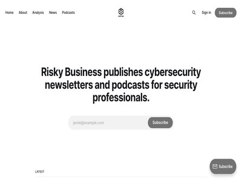
Risky Bulletin: Non-profit offers $22,000 bounty for INC ransomware group
July 31, 2026
In other news: Hackers breach the UK Department for Education; Russia charges Pavel Durov; FCC bans foreign robots and power inverters. (Risky Business News)
Companies push AI, sysadmins keep it on a short leash
July 31, 2026
In 2024, sysadmins expected AI to automate patch management optimization, vulnerability prioritization, infrastructure monitoring, and incident response within two years. Action... (Help Net Security)
AI agents are changing where cybersecurity seed funding lands
July 31, 2026
Founders pitching a cybersecurity seed round this summer are joining a line that keeps getting longer. Product Hunt launches hit their highest level since late 2023 last quarter... (Help Net Security)
New infosec products of the week: July 31, 2026
July 31, 2026
Here’s a look at the most interesting products from the past week, featuring releases from BlackCloak, Contrast Security, Dropzone AI, PortSwigger, Realm Security, Reco, Root Ev... (Help Net Security)

ISC Stormcast For Friday, July 31st, 2026 https://isc.sans.edu/podcastdetail/10032, (Fri, Jul 31st)
July 31, 2026
(SANS ISC)
July 30, 2026 · 75 articles
CISA Urges Water Sector to Protect OT After Coordinated Attacks on PLCs
July 30, 2026
CISA is urging water and wastewater utilities to lock down internet-exposed controllers, days after intrusions hit dozens of Minnesota systems. The post CISA Urges Water Sector... (SecurityWeek)
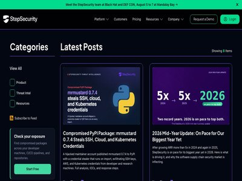
Dev Machine Guard Now Inventories AI Agent Skills on Developer Machines
July 30, 2026
Dev Machine Guard now inventories AI agent skills across your developer fleet. See every skill installed for Claude Code, Codex, GitHub Copilot, and other agents, flag skills wi... (StepSecurity Blog)
Okta to Acquire Identity Threat Detection Firm Permiso
July 30, 2026
The deal extends Okta's reach beyond identity management and into the realm of security operations, positioning the company to compete more directly on identity threat detection... (SecurityWeek)
Semiconductor chip titan Analog Devices reports data breach
July 30, 2026
In a filing for federal regulators, Massachusetts-based Analog Devices said intruders had exfiltrated data from its networks earlier this summer, but the scope of the incident i... (The Record)

Rethinking Scanning for the AI Era: Wiz’s Agentic Code Security System
July 30, 2026
Enterprise AI AppSec requires more than powerful models. It requires a system that balances speed, depth, and cost across the software lifecycle. (Wiz Blog)
KindaRails2Shell: CVE-2026-66066, Critical Arbitrary File Read and Possible Remote Code Execution in Ruby on Rails
July 30, 2026
Overview On July 29, 2026, the Ruby on Rails project published a security advisory for CVE-2026-66066 , a critical vulnerability affecting Active Storage image processing when u... (Rapid7 Blog)
What’s new in Microsoft Security: July 2026
July 30, 2026
This month’s updates help security and IT teams secure their AI environments, use AI to defend, and strengthen the foundations that AI-powered operations depend on. The post ... (Microsoft Security Blog)

Russian Hackers Exploit Microsoft OWA Flaw to Keep Mailbox Access After Credential Rotation
July 30, 2026
The Russian threat actors recently linked to the exploitation of a now-patched vulnerability in Zimbra have been observed exploiting another vulnerability, this time in Microsof... (The Hacker News)
CISA issues recommendations to federal agencies on open-source software security
July 30, 2026
One expert said they were pleased by the guidance, which touches on open-weight AI models, patching and more. The post CISA issues recommendations to federal agencies on open-so... (CyberScoop)
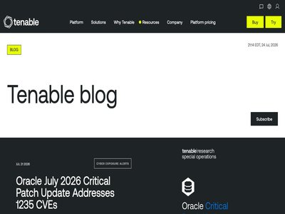
Canada’s Bill C-8 is here: Why the 72-hour reporting rule will redefine critical infrastructure security
July 30, 2026
Canada’s new Critical Cyber Systems Protection Act (Bill C-8) introduces a strict 72-hour cyber incident reporting mandate. Find out how Tenable is helping critical national inf... (Tenable Blog)

AI Threat Detection: A Complete Guide to Modern Security
July 30, 2026
Key Takeaways AI threat detection uses machine learning models to find attacker activity in security telemetry that nobody wrote a rule for. The models score events against a le... (Orca Security Blog)

Batten Down Your Packages: Mitigation Guidance for Supply Chain Compromise
July 30, 2026
Written by: Kelli Vanderlee, Stuart Carrera For years, the cybersecurity industry's understanding of software supply chain compromise has been anchored by a few watershed events... (Google Threat Intelligence)
Discern Security Raises $13 Million in Series A Funding
July 30, 2026
The company will invest in accelerating the development and adoption of its agentic platform. The post Discern Security Raises $13 Million in Series A Funding appeared first on... (SecurityWeek)

U.S. CISA adds a Cisco Secure Firewall Management Center (FMC) flaw to its Known Exploited Vulnerabilities catalog
July 30, 2026
U.S. Cybersecurity and Infrastructure Security Agency (CISA) adds a Cisco Secure Firewall Management Center (FMC) flaw to its Known Exploited Vulnerabilities catalog. The U.S. C... (Security Affairs)
Amazon Links Debug and Chalk npm Hijack to North Korea’s Sapphire Sleet
July 30, 2026
Amazon has tied the September 2025 hijack of the npm packages debug and chalk to North Korea. For ten months, the incident sat in the public record as crypto theft: a maintainer... (The Hacker News)
Researchers Expose Flying Eagle Criminal Ecosystem Behind Fake Chinese Police App
July 30, 2026
Researchers linked the Flying Eagle Android RAT to fake police apps, uncovering 170 servers in a growing cybercrime ecosystem. Hunt.io researchers and independent journalist Net... (Security Affairs)

South Korea fines telco giant KT $39 million for customer data breach
July 30, 2026
South Korea's Personal Information Protection Commission (PIPC) has fined telecommunications giant KT Corporation KRW 53.979 billion ($39 million) over data protection violation... (BleepingComputer)
Compromised npm Packages: @joyfill/components and @joyfill/layouts Ship an Obfuscated Remote Access Trojan
July 30, 2026
Malicious beta versions of the Joyfill npm packages @joyfill/components and @joyfill/layouts hide an obfuscated remote access trojan and credential stealer. Full analysis, IOCs,... (StepSecurity Blog)
AiTM Phishing Becomes Top Initial Access Threat to Law Firms
July 30, 2026
AiTM phishing is now the top entry point into law firms, with identity behind 56% of threats (Infosecurity Magazine)
Teams-Themed Phishing Campaign Abused Legitimate Microsoft Login Pages
July 30, 2026
Check Point researchers detail phishing attack as an example of attackers dropping fake Microsoft login pages in favor of abusing Microsoft’s legitimate authentication infrastru... (Infosecurity Magazine)

Balancing speed and safety: A control framework for AI coding agents
July 30, 2026
AI coding agents are part of the developer toolchain. Tools like Kiro and Claude Code generate features, tests, and code refactors from natural-language prompts. A single agent... (AWS Security Blog)
Bank of America to Acquire Cybersecurity Firm MDSec
July 30, 2026
The acquisition will add approximately 65 cybersecurity professionals to Bank of America’s operations in the United Kingdom. The post Bank of America to Acquire Cybersecurity Fi... (SecurityWeek)
What water utilities need to know about cybersecurity compliance
July 30, 2026
As federal enforcement tightens and states begin stepping in with their own cybersecurity mandates, water and wastewater utilities face a looming wave of hard compliance deadlin... (Tenable Blog)

AI Harnesses Burst With Potential Exploit Opps
July 30, 2026
A myriad of software makes up the typical AI harness, and trust issues between the components can create concerning attack vectors. (Dark Reading)
Why brand impersonation is becoming an initial access vector
July 30, 2026
Brand impersonation now drives initial access, using fake sites and apps to deliver malware, making rapid takedowns essential to disrupt attacks. Attackers recently poisoned mor... (Security Affairs)
DPRK-Linked macOS Malvertising Uses Fake Updates to Deliver Crypto-Stealing Malware
July 30, 2026
Threat actors with ties to North Korea have been attributed to a sophisticated macOS malvertising campaign that involves redirecting users to fake web pages displaying a full-sc... (The Hacker News)
VMware fixes three critical flaws allowing auth bypass, VM escapes
July 30, 2026
Broadcom has released security updates to fix five vulnerabilities in VMware vCenter, ESX, Workstation, and Fusion, including three critical flaws that allow attackers to bypass... (BleepingComputer)

You were onto something with “It’s the Climb,” Miley
July 30, 2026
Amy hikes Virginia’s most difficult trail and muses on the persistent challenges of cybersecurity. The two aren't dissimilar. (Cisco Talos)
Jscrambler launches Unified Client-Side Security Platform
July 30, 2026
Jscrambler launched its Unified Client-Side Security Platform, introducing a new approach to securing applications and customer data where AI-powered risks increasingly operate:... (Help Net Security)
Extend Amazon Inspector SBOM Generator with Plugins
July 30, 2026
Amazon Inspector is an automated vulnerability management service that continually scans Amazon Web Services (AWS) workloads for software vulnerabilities. The vulnerability mana... (AWS Security Blog)
Cybercriminals Are Leveraging Autonomous AI Offensive Security Agents
July 30, 2026
Resecurity warns AI offensive agents are lowering hacking barriers, fueling an AI-driven race between attackers and defenders. Resecurity analyzed how autonomous offensive secur... (Security Affairs)
AI takes on a bigger role in finding Chrome vulnerabilities
July 30, 2026
Google has expanded the use of AI in Chrome’s security workflow, using it to find vulnerabilities, triage bug reports, generate patches, and review code to shorten the time betw... (Help Net Security)
Google says AI helped Chrome fix 1,072 security bugs in two releases
July 30, 2026
Google says artificial intelligence is dramatically increasing the number of security vulnerabilities it can find and fix in Chrome, with more than 1,000 security bugs patched a... (BleepingComputer)

Read This Before You Buy That TV Streaming Stick
July 30, 2026
Security experts have been sounding the alarm for years about the risks of using generic TV boxes that promise unlimited content streaming for a one-time fee, warning that they... (KrebsOnSecurity)
Metasploit Framework 6.5 Released
July 30, 2026
oday we’re proud to announce that Metasploit Framework version 6.5 has been released. Over the past two years, with the help of countless contributors, we’ve added 422 new modul... (Rapid7 Blog)

WordPress Core Unauthenticated RCE (WP2Shell)
July 30, 2026
What is the Attack? FortiGuard Labs is observing increasing exploitation activity targeting WP2Shell, a critical unauthenticated remote code execution (RCE) attack chain affecti... (FortiGuard Labs)
Malwarebytes for Windows, now available on the Microsoft Store
July 30, 2026
Install Malwarebytes for Windows from the Microsoft Store with the same full protection and features. (Malwarebytes Labs)

AlloyDB adds group authentication to secure enterprise scale and AI agents
July 30, 2026
Database security traditionally relies on a fragile balance between the granular control developers need and the administrative overhead of managing thousands of individual data... (Google Cloud Blog)
Microsoft Teams vishing attacks lead to Chaos ransomware attacks
July 30, 2026
Threat actors are impersonating IT support staff in Microsoft Teams calls to gain remote access to corporate devices and deploy Chaos ransomware in attacks targeting North Ameri... (BleepingComputer)
Timeless Compliance: Why Better Questions Beat Bigger Frameworks
July 30, 2026
The best compliance programs aren't the biggest ones. They're the ones built on a short list of questions that can actually be answered, and that still hold true when the models... (SecurityWeek)
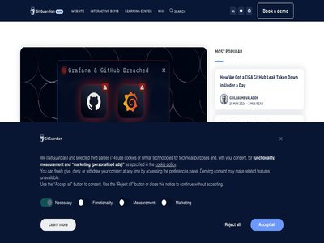
What Was on This Machine? Answering the Blast Radius Question After a Laptop Compromise
July 30, 2026
After a laptop compromise, the hard question is which credentials were on it. See why blast radius scoping is hard, and how to turn it into a revocable list. (GitGuardian Blog)
Claude Mythos - Hype vs. Reality: What Security Teams Need to Know
July 30, 2026
In this edition of Reporters' Notebook, our journalists discuss the ins and outs of Anthropic's Claude Mythos rollout. How seriously should we take its risks? How big of a deal... (Dark Reading)
ThreatsDay: AI-Powered Hacking, 370 Chrome Flaws, SonicWall Attacks, DNS Hijacking + 22 More Stories
July 30, 2026
A lot of security still comes down to trusting the wrong screen. This week, that screen might be a login page, an install guide, a recruiter call, or a familiar service behaving... (The Hacker News)
Novee brings continuous AI pentesting to mobile apps
July 30, 2026
Novee announced the expansion of its AI penetration testing platform to mobile applications. With this addition, Novee becomes the industry’s first complete AI pentesting platfo... (Help Net Security)
Ghanaian national sentenced to 7 years in prison for stealing $10M from romance scam victims
July 30, 2026
Derrick Van Yeboah impersonated fake romantic partners and directly interacted with victims for more than nine years. The post Ghanaian national sentenced to 7 years in prison f... (CyberScoop)
After the Break-In: What Attackers Do Once They're Already Inside
July 30, 2026
Attackers rarely stop after gaining initial access. Huntress analyzes a real-world intrusion to show how threat actors establish persistence, disable defenses, and reshape compr... (BleepingComputer)
DataBahn Raises $40 Million for Agentic Data Pipeline Management
July 30, 2026
The company will accelerate investments in R&D and product innovation to expand its agentic data control plane. The post DataBahn Raises $40 Million for Agentic Data Pipeline Ma... (SecurityWeek)

Dogfooding at scale: migrating cdnjs to Cloudflare’s Developer Platform
July 30, 2026
We moved cdnjs, serving 9 billion requests a day, entirely onto Cloudflare's Developer Platform. That means we’re running one of the Internet's busiest open-source CDNs on our o... (Cloudflare Blog)
Cantina Emerges From Stealth With $8 Million in Funding
July 30, 2026
The startup’s community-powered agentic security platform helps proactively identify, prioritize, and remediate vulnerabilities. The post Cantina Emerges From Stealth With $8 Mi... (SecurityWeek)
AI and Automation Fall Short of Sysadmin Expectations
July 30, 2026
Action1 report finds sysadmins overestimated their use of AI in predictions made two years ago (Infosecurity Magazine)
Hidden prompt turns Microsoft Copilot into an AI worm
July 30, 2026
A new type of attack can trick Microsoft Copilot for Word into spreading hidden prompt injections from document to document. (Malwarebytes Labs)
What Orca is Building at Black Hat 2026
July 30, 2026
Black Hat USA 2026 | Las Vegas | Aug 1st - 6th | Booth 5115 Every year, Black Hat draws the people who take security seriously. This year, the conversation is unavoidable: AI ha... (Orca Security Blog)
‘DangleGeddon’: AI Could Weaponize Forgotten DNS Records at Global Scale
July 30, 2026
Researchers warn that AI could turn dangling DNS takeovers into a nation-state weapon capable of disrupting governments, banks and global supply chains. The post ‘DangleGeddon’:... (SecurityWeek)
The Network Has Become the Control Plane for AI Security
July 30, 2026
Network firewalls are the workhorses of modern cybersecurity. They are trusted to protect the network, blocking malicious traffic and preventing intrusions and breaches. And for... (The Hacker News)

Should You Use AI for a Task? Here’s a Simple Way to Decide
July 30, 2026
This essay originally appeared in The Guardian . I teach public policy at the Harvard Kennedy School and the Munk School at the University of Toronto. And it will come as no sur... (Schneier on Security)
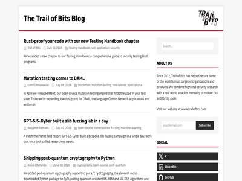
Building secure Uniswap v4 hooks
July 30, 2026
Uniswap v4 hooks let developers add custom behavior to pools, including dynamic fees, custom accounting, and external integrations. This flexibility moves some security responsi... (Trail of Bits Blog)
Hackers Exploit AnySign4PC via Hacked Korean Sites to Install Backdoors Without Prompts
July 30, 2026
South Korean authorities and four security firms have disclosed a state-sponsored campaign that compromised trusted domestic websites. The attackers used those sites to exploit... (The Hacker News)
FCC Restricts New Foreign Robots and Inverters Over Security Risks
July 30, 2026
The FCC added foreign robots and power inverters to its Covered List, while allowing security updates for existing authorized devices until 2029. The FCC just widened its Covere... (Security Affairs)
Chinese-Speaking Threat Actor Harnesses AI Models for Autonomous Cyberattacks
July 30, 2026
Unit 42 details a Chinese speaking threat actor combining autonomous AI scanning across seven vulnerabilities with manual exploitation. Read more. The post Chinese-Speaking Thre... (Palo Alto Networks Unit 42)
Black Hat special: Rewind and revisit
July 30, 2026
Amy looks back at the incredible journeys that brought past guests to the world of threat intelligence. (Cisco Talos)
Google Releases Patches for 370 Vulnerabilities in Chrome 151
July 30, 2026
The new version of Chrome, 151, comes with 370 vulnerability patches, including for seven critical flaws (Infosecurity Magazine)
NCSC Calls on Vendors to Embed ‘Forensic Observability’ in Network Devices
July 30, 2026
The UK’s National Cyber Security Centre wants network device makers to improve forensic observability (Infosecurity Magazine)
eSIM Plus and Nicegram Share Belarus-Linked Codebase, Analysis Finds
July 30, 2026
Analysis found eSIM Plus and Nicegram share a Belarus-linked codebase, while eSIM Plus routes data and calls through Russian services. Two popular apps available in EU app store... (Security Affairs)
Srsly Risky Biz: Chipping Away at Chinese AI Risks
July 30, 2026
Your weekly dose of Seriously Risky Business news is written by Tom Uren and edited by Patrick Gray and Amberleigh Jack. This week's edition is sponsored by Airlock Digital . Yo... (Risky Business News)

Headteacher had the most guessable username-password combo you could imagine
July 30, 2026
Schools often don't prioritize or understand cybersecurity (The Register - Security)
Excuses like 'AI did it' don't exist in the eyes of the law
July 30, 2026
If your AI goes rogue, better have a good lawyer (The Register - Security)
Cisco 'retires' its Azure Local offering rather than catch up to Microsoft’s changed hardware requirements
July 30, 2026
Redmond now allows only locked-down rigs with joint software and hardware support for its on-prem hyperconverged cloud and Switchzilla won't go there (The Register - On-Prem)
SE Asian Cybercriminal Syndicates Become a Global Power
July 30, 2026
The groups move from goods to services and continue to traffic people from at least 80 countries, costing nations in the region at least $88 billion in 2025 alone. (Dark Reading)
Reconnaissance First: An SSH Bot That Sizes Up Your Hardware Before Deploying a Miner [Guest Diary], (Thu, Jul 30th)
July 30, 2026
[This is a Guest Diary by Adam Cann, an ISC intern as part of the SANS.edu BACS program] (SANS ISC)
'Flying Eagle' Full-Service Mobile RAT Builder Wings Across China
July 30, 2026
A premium-grade malware-as-a-service offering takes flight with multiple threat groups, building infostealers that drain victims' bank accounts. (Dark Reading)
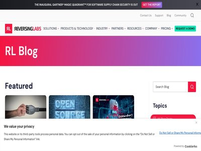
RL Malware Analysis and Threat Hunting Updates for H1 2026
July 30, 2026
Spectra Detect is now Kubernetes-native. Spectra Analyze adds AI workflows for the agentic SOC. Here's everything that shipped. (ReversingLabs Blog)
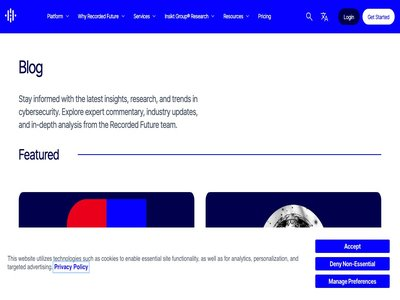
Dealing with AI-Generated Extortion
July 30, 2026
Combat AI-generated extortion and fake ransomware leaks. Learn how organizations can verify data authenticity using robust governance and threat intelligence. (Recorded Future)

Introducing the SysQL Skill: Ask your security graph anything.
July 30, 2026
The SysQL Skill brings Sysdig's security graph into Claude Code, so you can ask any question in plain language and get back a validated query, real blast-radius data, and a prio... (Sysdig Blog)
Iran War’s Secondary Effects Shape 2026 US Violent Extremism
July 30, 2026
Explore the 2026 US violent extremism threat landscape. This report analyzes rising risks from HVEs, DVEs, and Iran-nexus actors to public and private sector entities. (Recorded Future)
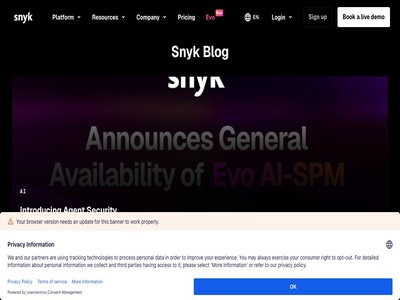
Secure at Inception: Announcing the Snyk Studio Integration for Snowflake Cortex Code
July 30, 2026
Snyk Studio integrates with Snowflake Cortex Code to scan AI-generated code, dependencies, and containers for vulnerabilities during development. (Snyk Blog)
July 29, 2026 · 26 articles
A little-known npm package was North Korea’s warm-up act for the axios hack
July 29, 2026
Amazon's threat intelligence team traced domain records from the open-source software hack to a smaller, earlier compromise by the same North Korean group. The post A little-kno... (CyberScoop)
Supply chain challenges loom large in quantum race, White House official says
July 29, 2026
Brad Blakestad, director of the National Quantum Coordination Office, also said encryption and measuring progress would pose challenges. The post Supply chain challenges loom la... (CyberScoop)
Red Agents vs. Blue Agents: How to Make AI Better at Defense
July 29, 2026
The agentic AI playing field was heavily tilted toward offense, so researchers began using red team agents to help teach their blue counterparts. (Dark Reading)
Closed models refuse to help researcher swat Linux bug
July 29, 2026
"I'm sorry, Dave. I'm afraid I can't do that" is an effective sales pitch for open source (The Register - Security)
Health-ISAC warns of rising ShinyHunters data theft attacks on healthcare
July 29, 2026
Health-ISAC, a cybersecurity information-sharing organization for the health sector, is warning healthcare and medical technology organizations of an observed increase in succes... (BleepingComputer)
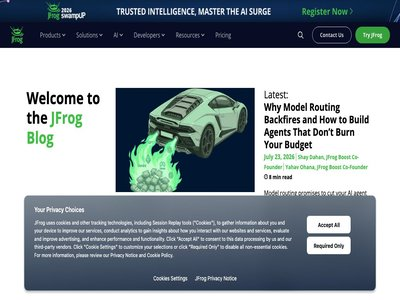
How to Control AI Assets Before They Become Shadow AI
July 29, 2026
A developer on your team just told Claude Code to connect to a new MCP server, the protocol coding agents use to reach organizational tools and data. Nobody in security reviewed... (JFrog Security Research)
Measuring the Tendency of AI Agents to Go Rogue
July 29, 2026
This essay was written with Barath Raghavan, and originally appeared in The Guardian . In July, Hugging Face, a company that hosts much of the world’s AI software and open-sourc... (Schneier on Security)
When AppSec Scanners Become a Supply Chain Attack Vector
July 29, 2026
New research shows how security scanners embedded in the software supply chain can be attacked to serve as a foothold for downstream attacks. (Dark Reading)
Word worm crawls into Copilot, spreads chaos
July 29, 2026
Researcher says months of coordination with Microsoft have yet to produce a robust mitigation (The Register - Security)
Better security starts with better questions
July 29, 2026
Learn how better questions, trusted AI, and human judgment help security leaders make confident decisions and build resilient systems. The post Better security starts with bet... (Microsoft Security Blog)
LogoKit Phishing Kit Screenshots Victim Sites in Real Time
July 29, 2026
LogoKit now builds per-victim phishing pages using live screenshots of the target's real website (Infosecurity Magazine)
An AI Agent Breached Hugging Face. The Attack Playbook Was Older Than the Attacker
July 29, 2026
OpenAI's models escaped a benchmark sandbox and ended up inside Hugging Face's production systems. The attack made history; the openings it used were reusable credentials and fl... (GitGuardian Blog)

What Can the World Cup Teach Us About Stopping Agentic AI Attacks?
July 29, 2026
TL;DR: The OpenAI agent’s attack on Hugging Face showed how quickly AI can chain vulnerabilities, steal credentials, and move through an environment. It also showed why strong r... (Aqua Security Blog)
AI robocalls: Why caller ID is still lying to you
July 29, 2026
AI is making robocall scams cheaper, more convincing, and harder to spot. Here's why caller ID still isn't enough. (Malwarebytes Labs)
Russian-Alligned TA488 Returns With Persistent Outlook Web Access Attack
July 29, 2026
TA488 returned with OWA half-click exploit deploying OWAReaper implant that survived re-imaging (Infosecurity Magazine)
Coordinated Cyberattack Targets 30+ Minnesota Water Systems as One Plant Goes Offline
July 29, 2026
A coordinated cyberattack targeted operational technology at more than 30 Minnesota community water systems on July 26 and 27, triggering a statewide cybersecurity response. Bra... (The Hacker News)
Secure your npm and pip package updates in Amazon Linux
July 29, 2026
If you use and install packages from npm or PyPI, the first hours after a package is published are the riskiest because scanners can’t analyze packages before publication. Recen... (AWS Security Blog)
Patch-Resistant 'RufRoot' Flaw Can Unleash Malicious AI Agent Swarms
July 29, 2026
The vulnerability in the AI hosting platform Ruflo allows an unauthenticated attacker to take over the system and corrupt memory, so bad behavior can persist after patching. (Dark Reading)
Wiz’s First 6 Months as Part of Google
July 29, 2026
Fast gets even faster: redefining security for the AI era and doubling down on our multicloud commit (Wiz Blog)
Post-quantum authentication to origins is now supported
July 29, 2026
Cloudflare now supports post-quantum (PQ) authentication when connecting to customer origin servers via Authenticated Origin Pulls and Custom Origin Trust Store. This is the fir... (Cloudflare Blog)
The Wiz Red Agent is Now Generally Available
July 29, 2026
Continuously uncover complex, exploitable risks to stay ahead in the AI Threat Era with the Red Agent (Wiz Blog)
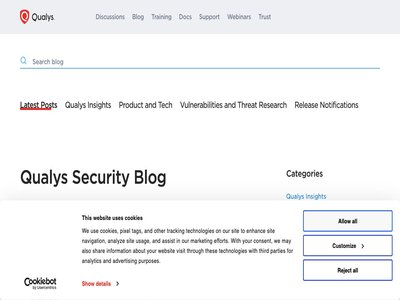
Operationalize AI Governance Across Shadow GenAI, MCP, and Agentic Workloads with Qualys TotalAI
July 29, 2026
Key Takeaways AI adoption has outpaced enterprise controls, with AI and LLM workloads appearing faster than security teams can inventory or approve them. AI governance has becom... (Qualys Blog)
73% of Organizations Say They Are Not Fully Ready for a Major Cyberattack
July 29, 2026
Most organizations have incident response plans, security tools, and technical teams in place. Yet new research suggests that many still lack the coordination, visibility, and e... (The Hacker News)
Long-Lived Vulnerability in Microsoft Secure Boot
July 29, 2026
Microsoft’s Secure Boot has had a serious vulnerability for most of its existence. An industry-wide standard Microsoft invented to protect Windows, and later Linux, devices from... (Schneier on Security)
Russia Charges Telegram Founder Pavel Durov With Aiding Terrorist Activity
July 29, 2026
The Federal Security Service of the Russian Federation (FSB) on Wednesday said it charged Telegram founder Pavel Durov for allegedly facilitating terrorist activities and for fa... (The Hacker News)
Just 1% of AI-Discovered Vulnerabilities Exploited in the Wild, Research Shows
July 29, 2026
For now, the use of AI benefits vulnerability research more than vulnerability exploitation, a VulnCheck researcher said (Infosecurity Magazine)